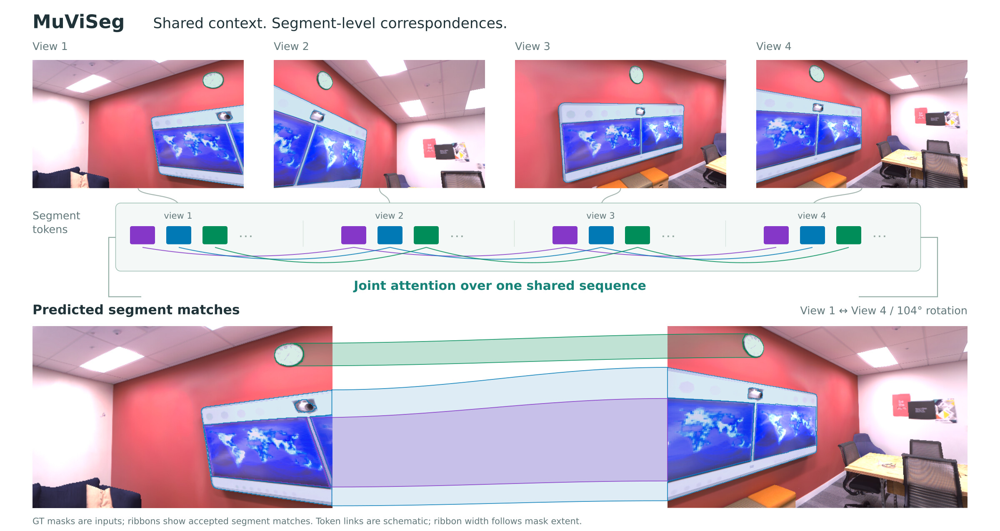
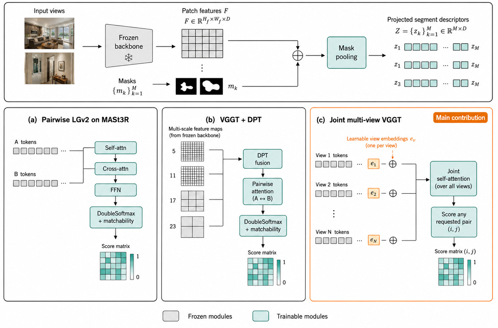
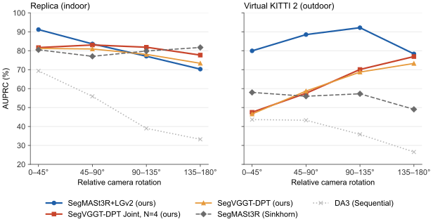
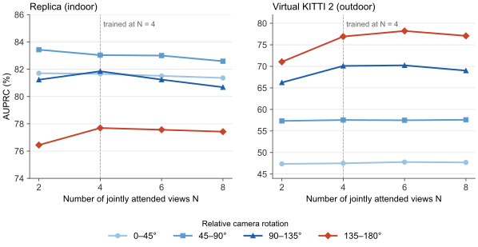

MuViSegMulti-View Segment Correspondences from Dense Geometry Priors
Applied AI Institute, Moscow, Russia
ACCV 2026

Abstract
Object-level mapping and topological navigation reason about whole objects, yet the correspondences they rely on are computed over keypoints or pixels and only aggregated into objects afterwards. A recent line of work removes this detour by matching directly at the level of instance segments: a class-agnostic segmenter partitions each image, and per-segment descriptors are pooled from large 3D foundation models over the masks. This shifts the open question to how frozen foundation features should be processed once the unit of matching is a segment. We introduce MuViSeg, three learned matching heads: a LightGlue-style attention head on frozen MASt3R descriptors; a DPT-style multi-scale fusion module that exposes layered spatial detail from VGGT before pooling; and, as our main contribution, a joint multi-view head that attends over segments from several views at once, recovering transitive correspondences that pairwise matchers cannot express. In zero-shot evaluation on Replica and Virtual KITTI 2 across 0–180 degree viewpoint changes, our heads consistently improve over a parameter-free Sinkhorn matcher on the same backbone. Across 102 HM3D navigation episodes, direct segment matchers and sparse keypoint aggregation are statistically indistinguishable, while dense matches voted into masks lose 13.7–18.0 SPL.
Method

MASt3R features depend on the image pair, because its decoder cross-attends between the two views. They suit a strong pairwise head but cannot be shared across a variable set of views. VGGT features are pair-independent, so the joint multi-view head is built on VGGT. The joint model is trained with N = 4 views and runs at other N without retraining. All heads are trained on ScanNet++ only.
Results
Zero-shot segment matching on Replica (indoor, 3,200 pairs) and Virtual KITTI 2 (outdoor driving, 3,200 pairs). Pairs are binned by relative camera rotation; overall numbers are query-weighted across bins. Best per column in bold.
| Replica | Virtual KITTI 2 | |||||
|---|---|---|---|---|---|---|
| Method | AUPRC | R@1 | R@5 | AUPRC | R@1 | R@5 |
| vizEnc+Radio | 40.69 | 58.20 | 79.04 | 27.54 | 43.38 | 66.89 |
| vizEnc+DINOv2 | 49.48 | 59.29 | 80.29 | 30.22 | 46.68 | 70.34 |
| LiftFeat | 35.69 | 40.21 | 67.57 | 32.35 | 47.21 | 68.04 |
| DA3 (Sequential) | 54.29 | 73.96 | 73.96 | 40.67 | 53.74 | 75.40 |
| SegMASt3R (Sinkhorn) | 79.63 | 81.45 | 94.21 | 56.91 | 63.67 | 81.57 |
| SegVGGT-DPT (ours) | 79.70 | 74.10 | 90.11 | 52.28 | 42.80 | 67.27 |
| SegVGGT-DPT Joint, N=4 (ours) | 81.37 | 75.64 | 90.42 | 52.85 | 42.93 | 66.75 |
| SegMASt3R+LGv2 (ours) | 84.48 | 77.46 | 93.63 | 82.78 | 73.25 | 96.22 |

Number of jointly attended views

Real images
Replica and Virtual KITTI 2 are rendered. On held-out ScanNet++ validation scenes (real images, in-domain rather than zero-shot), all three heads match or exceed the Sinkhorn baseline: AUPRC 89.6 (SegVGGT-DPT), 90.6 (Joint) and 91.0 (LGv2), against 88.9.
Robot capture
The joint model on an in-house robot recording, with no retraining. Segments are FastSAM proposals, and each colour is one track. There is no ground truth for this recording, so these videos are qualitative.
Object-goal navigation
Each matcher replaces the online localizer of RoboHop for HM3D Instance Image Navigation, without retraining. All matchers share the same episodes, map, masks and localizer settings. HM3D v2 val, 102 episodes in 36 scenes; values are percentages.
| Online matcher | SR | SPL | Soft SPL |
|---|---|---|---|
| Oracle (GT metric localizer) | 78.43 | 78.33 | 84.29 |
| SuperPoint+LightGlue, segment vote | 44.12 | 44.10 | 53.16 |
| SegMASt3R (Sinkhorn) | 42.16 | 42.36 | 52.21 |
| SegMASt3R+LGv2 (ours) | 41.18 | 41.17 | 51.89 |
| SegVGGT-DPT (ours) | 42.16 | 42.05 | 50.17 |
| SegVGGT-DPT Joint, N=2 (ours) | 45.54 | 45.43 | 53.60 |
| SegVGGT-DPT Joint, N=4 (ours) | 43.14 | 43.03 | 53.45 |
| RoMa, segment vote | 27.45 | 27.45 | 37.40 |
Success is tested with an exact McNemar test and SPL with a paired bootstrap, with Holm correction over all 28 pairwise comparisons. The five direct segment matchers and SuperPoint+LightGlue are not statistically separated, so no ranking among them is claimed. The oracle is better than every matcher, and RoMa voted into masks is worse than every direct segment matcher.
Code
Training, evaluation and inference code is at github.com/muviseg/muviseg-codeRelease, and the checkpoints are on Hugging Face. To install and run an evaluation:
git clone https://github.com/muviseg/muviseg-codeRelease.git
cd muviseg-codeRelease
uv sync
bash setup_third_party.sh
uv run python scripts/download_checkpoints.py
export MUVISEG_DATA_ROOT=/path/to/datasets
uv run python scripts/eval.py --dataset replica --config configs/eval/replica_segvggt_joint.yamlThe repository README covers training, inference on your own frames, the navigation experiments, and which reported numbers can be reproduced exactly.
BibTeX
@inproceedings{muviseg2026,
title = {MuViSeg: Multi-View Segment Correspondences from Dense Geometry Priors},
author = {Fatykhoph, Denis and Akhtyamov, Timur and Pakulev, Konstantin
and Devchich, German and Ferrer, Gonzalo},
booktitle = {Proceedings of the Asian Conference on Computer Vision (ACCV)},
year = {2026}
}